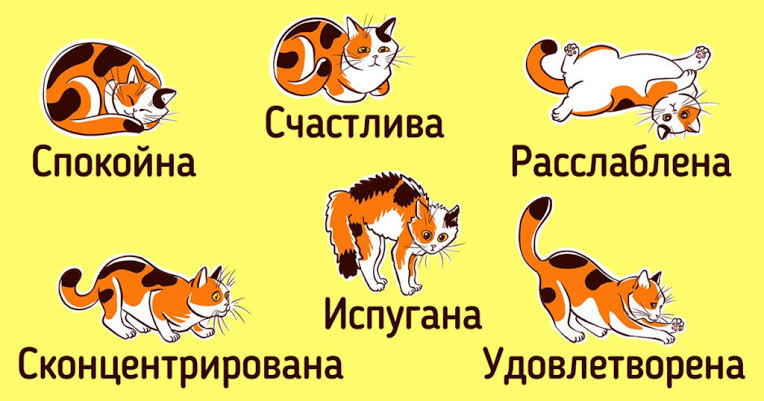
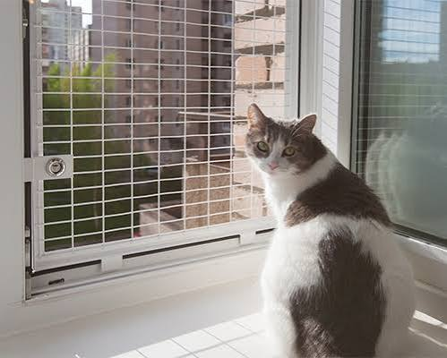
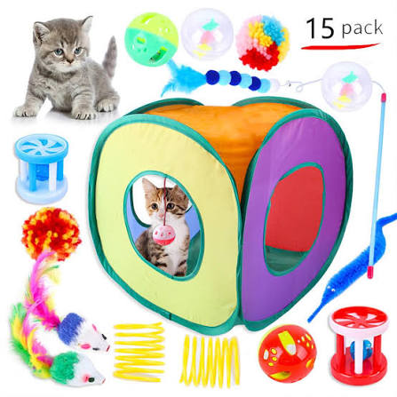
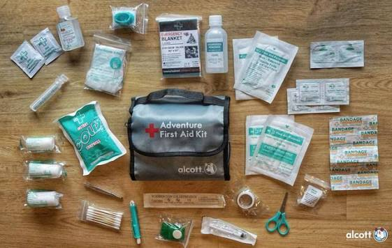

Психологія
Як читати мову тіла кота: Вуха, хвіст і вуса
Кішки спілкуються з нами за допомогою рухів тіла. Тремтячий хвіст, притиснуті вуха або розгорнуті вібриси — навчіться розпізнавати емоції вашого улюбленця.
Читати далі →
Безпека
Чому звичайні москітні сітки небезпечні для котів
З настанням тепла відкриті вікна стають пасткою. Розповідаємо про «синдром висотного кота» та переваги встановлення спеціальних сталевих сіток «Антикішка».
Читати далі →
Активність
Як правильно грати з котиком лазерною указкою
Лазерна указка може викликати у тварини серйозну фрустрацію та стрес. Дізнайтеся, як правильно завершувати гру, щоб кішка відчувала радість від спійманої здобичі.
Читати далі →
Здоров'я
Складаємо аптечку першої допомоги для кішки
Які препарати мають обов'язково бути вдома на випадок травми чи отруєння, і чому людські знеболювальні є смертельно небезпечними для котів.
Читати далі →